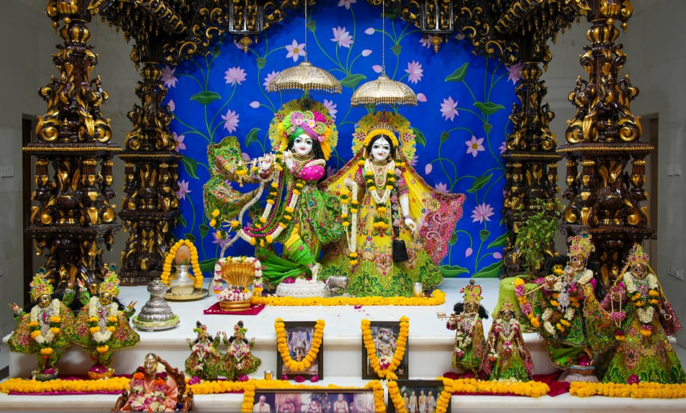
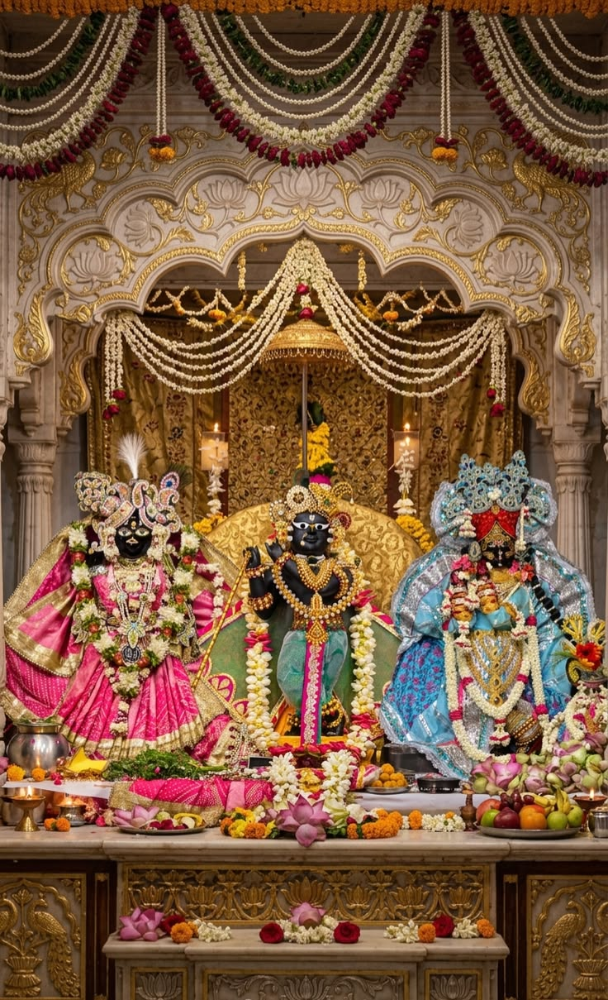
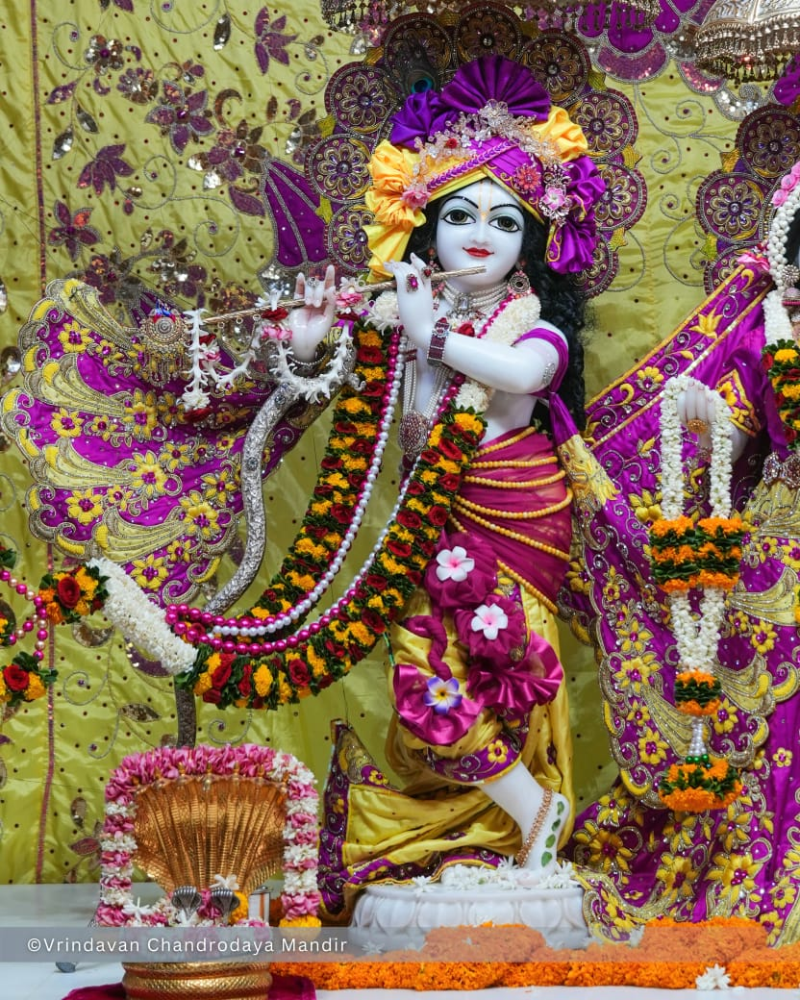

श्री बाँके बिहारी जी
वृंदावन के सबसे प्रसिद्ध कृष्ण मंदिरों में से एक, जहाँ ठाकुर श्री बाँके बिहारी जी के दर्शन के लिए बड़ी संख्या में श्रद्धालु आते हैं।
राधे राधे 🙏

उत्तर प्रदेश के मथुरा क्षेत्र में स्थित वृंदावन भगवान श्रीकृष्ण की लीलाओं से जुड़ा एक प्रमुख वैष्णव तीर्थ है।
ब्रज परंपरा में वृंदावन का नाम श्री राधा-कृष्ण की भक्ति, प्रेम और लीलाओं से गहराई से जुड़ा हुआ है। यहाँ अनेक प्राचीन और आधुनिक मंदिर तथा पवित्र स्थल हैं।
“वृंदावन केवल एक स्थान नहीं, भक्तों के लिए यह राधा-कृष्ण की भक्ति का अनुभव है।”
वैष्णव भक्ति परंपराओं में श्री राधा को भगवान श्रीकृष्ण की परम प्रेममयी शक्ति और भक्ति के सर्वोच्च स्वरूप के रूप में स्मरण किया जाता है।
ब्रज क्षेत्र में बरसाना विशेष रूप से श्री राधा रानी से जुड़ा हुआ है। यहाँ स्थित श्री राधा रानी मंदिर श्रद्धालुओं का प्रमुख तीर्थ है।
बरसाना दर्शन →
भगवान श्रीकृष्ण की बाल और किशोर लीलाओं से मथुरा, गोकुल, वृंदावन, नंदगाँव और गोवर्धन सहित पूरा ब्रज क्षेत्र जुड़ा हुआ है।
वृंदावन के मंदिरों में श्रीकृष्ण के अनेक स्वरूपों की सेवा और दर्शन की परंपरा है। भक्त प्रेमपूर्वक उन्हें ठाकुर जी कहकर भी संबोधित करते हैं।

किसी भी मंदिर पर क्लिक करके उसकी जानकारी देखें।
वृंदावन के सबसे प्रसिद्ध कृष्ण मंदिरों में से एक, जहाँ ठाकुर श्री बाँके बिहारी जी के दर्शन के लिए बड़ी संख्या में श्रद्धालु आते हैं।

राधा-कृष्ण को समर्पित भव्य मंदिर परिसर, जो अपनी वास्तुकला और रात्रिकालीन प्रकाश सज्जा के लिए प्रसिद्ध है।

ISKCON वृंदावन का प्रसिद्ध श्री कृष्ण-बलराम मंदिर, जहाँ कीर्तन और भक्ति का विशेष वातावरण रहता है।

ब्रज की धार्मिक परंपराओं और राधा-कृष्ण की लीलाओं से जुड़ा अत्यंत श्रद्धेय स्थल। इससे जुड़ी अनेक मान्यताएँ भक्तों में प्रचलित हैं।
ब्रज की यात्रा में इन पवित्र स्थानों का विशेष महत्व है।

श्री राधा रानी से जुड़ा प्रमुख ब्रज तीर्थ। यहाँ श्रीजी मंदिर श्रद्धालुओं के लिए विशेष आस्था का केंद्र है।

ब्रज परंपरा में नंद बाबा और भगवान श्रीकृष्ण की बाल लीलाओं से जुड़ा पवित्र स्थान।

गिरिराज गोवर्धन श्रीकृष्ण की गोवर्धन लीला से जुड़ा है। यहाँ गिरिराज परिक्रमा की प्रसिद्ध परंपरा है।

यमुना नदी का ब्रज की धार्मिक परंपरा और श्रीकृष्ण की कथाओं में विशेष स्थान है। वृंदावन का केशी घाट प्रमुख दर्शनीय स्थल है।
ब्रज चौरासी कोस यात्रा एक पारंपरिक धार्मिक परिक्रमा है जिसमें ब्रज क्षेत्र से जुड़े अनेक तीर्थ, वन, कुंड, गाँव और लीला स्थलों के दर्शन किए जाते हैं।
भगवान श्रीकृष्ण के जन्मोत्सव का प्रमुख पर्व।
श्री राधा रानी के प्राकट्य उत्सव के रूप में मनाया जाता है।
बरसाना, नंदगाँव और वृंदावन की होली विशेष रूप से प्रसिद्ध है।
श्री गिरिराज गोवर्धन और भगवान श्रीकृष्ण से जुड़ा प्रमुख पर्व।
राधा रानी, ठाकुर जी और ब्रजधाम के दिव्य दर्शन एक ही स्थान पर।





मंदिर, पवित्र स्थल और ब्रज के प्रमुख स्थान खोजें।
वृंदावन के प्रसिद्ध श्रीकृष्ण मंदिरों में से एक।
वृंदावन की प्राचीन वैष्णव मंदिर परंपरा से जुड़ा प्रसिद्ध मंदिर।
गौड़ीय वैष्णव परंपरा का महत्वपूर्ण वृंदावन मंदिर।
वृंदावन के प्रसिद्ध ऐतिहासिक मंदिरों में से एक।
राधा-कृष्ण को समर्पित भव्य आधुनिक मंदिर परिसर।
वृंदावन का प्रसिद्ध ISKCON मंदिर परिसर।
राधा-कृष्ण की लीलाओं से जुड़ी ब्रज की धार्मिक परंपराओं का श्रद्धेय स्थल।
राधा-कृष्ण की लीला परंपराओं से जुड़ा वृंदावन का पवित्र स्थान।
यमुना जी के किनारे स्थित वृंदावन का प्रसिद्ध घाट।
श्री राधा रानी से विशेष रूप से जुड़ा ब्रज का प्रमुख तीर्थ।
नंद बाबा और श्रीकृष्ण की बाल लीलाओं से जुड़ा स्थान।
भगवान श्रीकृष्ण की गोवर्धन लीला से जुड़ा प्रमुख ब्रज तीर्थ।
कोई स्थान नहीं मिला।
आपके पास जितना समय हो, उसके अनुसार प्रमुख मंदिरों और ब्रज स्थलों की यात्रा योजना देखें।
कम समय में प्रमुख वृंदावन दर्शन
यात्रा की शुरुआत ठाकुर श्री बाँके बिहारी जी के दर्शन से करें।
इसके बाद श्री राधा रमण जी के दर्शन किए जा सकते हैं।
वृंदावन की गौड़ीय वैष्णव परंपरा से जुड़े इस प्रसिद्ध मंदिर के दर्शन करें।
ब्रज की धार्मिक परंपराओं में राधा-कृष्ण की लीलाओं से जुड़े इन श्रद्धेय स्थलों के दर्शन करें।
यमुना जी के दर्शन के साथ वृंदावन की शाम का अनुभव करें।
यात्रा के अंत में प्रेम मंदिर परिसर के दर्शन किए जा सकते हैं।
श्री राधा रानी से जुड़े बरसाना धाम और श्रीजी मंदिर के दर्शन।
नंद बाबा और श्रीकृष्ण की बाल लीलाओं से जुड़े नंदगाँव के दर्शन।
श्री गिरिराज गोवर्धन, मानसी गंगा और आसपास के प्रमुख ब्रज स्थलों के दर्शन।
बाँके बिहारी मंदिर
राधा रमण मंदिर
राधा दामोदर मंदिर
निधिवन एवं सेवा कुंज
केशी घाट
कृष्ण-बलराम मंदिर
प्रेम मंदिर
बरसाना
श्री राधा रानी मंदिर
नंदगाँव
नंद भवन
आसपास के ब्रज स्थल
गोवर्धन
मानसी गंगा
राधाकुंड
श्यामकुंड
गिरिराज परिक्रमा
मंदिरों के खुलने, बंद होने, आरती और दर्शन का समय मौसम, पर्व और दिन के अनुसार बदल सकता है। यात्रा वाले दिन वर्तमान समय जाँचें।
वृंदावन में कई स्थान पैदल घूमने पड़ सकते हैं। आरामदायक footwear रखें और मंदिर के नियमों का पालन करें।
कुछ क्षेत्रों में बंदर पाए जाते हैं। चश्मा, मोबाइल और दूसरी छोटी वस्तुओं को सुरक्षित रखें।
गर्म मौसम में पानी साथ रखें। मौसम के अनुसार हल्के या गर्म कपड़ों की तैयारी करें।
हर मंदिर में photography की अनुमति समान नहीं होती। जहाँ फोटो या वीडियो निषिद्ध हो, वहाँ नियमों का सम्मान करें।
मंदिरों, घाटों और धार्मिक स्थलों पर स्वच्छता बनाए रखें और स्थानीय धार्मिक परंपराओं का सम्मान करें।
अलग-अलग मंदिरों के दर्शन और आरती के समय बदल सकते हैं। यात्रा के दिन संबंधित मंदिर की आधिकारिक जानकारी अवश्य जाँचें।
वृंदावन और गोवर्धन में परिक्रमा की परंपरा है। मौसम और अपनी सुविधा के अनुसार तैयारी करें।
मंदिरों और पवित्र स्थलों पर स्थानीय नियमों, दर्शन व्यवस्था और धार्मिक मर्यादा का सम्मान करें।
श्री वृंदावन धाम के दिव्य दर्शन। राधे राधे 🙏
 >
alt="आज के श्री राधा रानी दर्शन"
id="todayRadha"
>
आज के दर्शन
>
alt="आज के श्री राधा रानी दर्शन"
id="todayRadha"
>
आज के दर्शन
श्री राधा रानी के दिव्य चरणों में कोटि-कोटि प्रणाम।

आज के दर्शनठाकुर जी की कृपा सभी भक्तों पर बनी रहे।